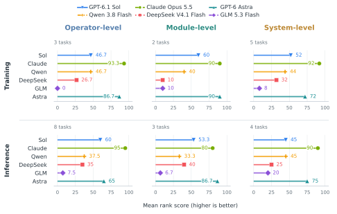
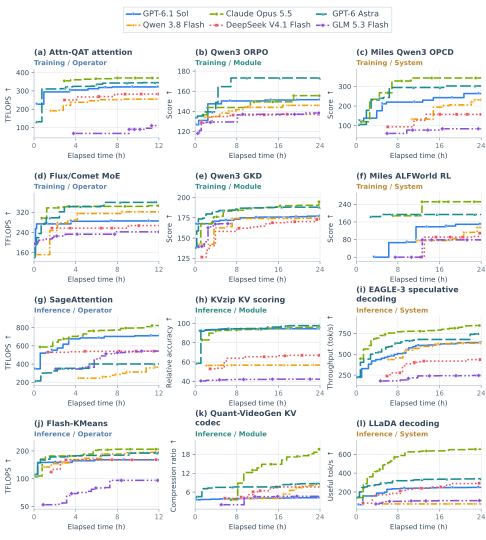
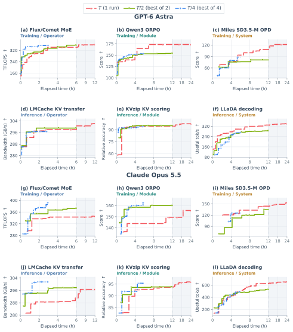
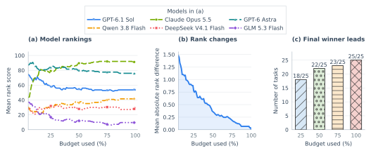
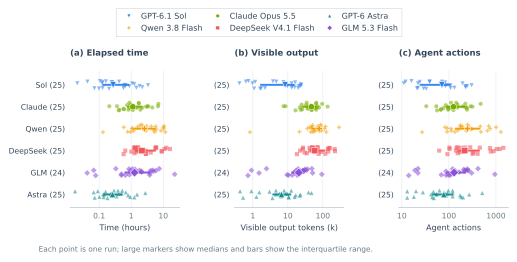
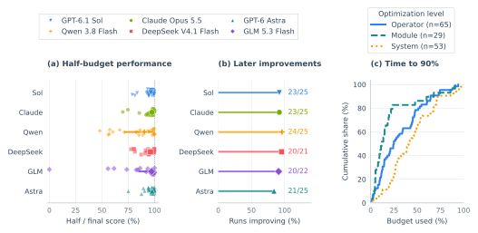

Experimental Results
Final performance, optimization trajectories, time allocation, and interaction across six frontier model configurations.
Main Results
Claude leads overall, with different winners across tasks.
149 of the 150 runs produce valid scored submissions. GLM on Wan2.2 has no submission and receives zero. Claude wins 17 tasks, Astra six, and Sol and Qwen one each. Claude’s wins cover nine operators, two modules, and six systems.
The three inference-module tasks have different winners: Sol on kvpress, Astra on KVzip, and Claude on Quant-VideoGen. Astra leads that group with a rank score of 86.7, versus Claude’s 80.0. Qwen leads concurrent agent serving at 154.33 valid steps/min, ahead of Claude’s 151.17.
Rank-based final performance across all 25 tasks

Optimization Trajectories
Gains can follow long score plateaus.
Among 147 full-budget runs with scored submissions, 49 set a new record after spending at least a quarter of their budget without one; 28 of those records improve the preceding best by more than 1%. Recent score stagnation can be a misleading stopping signal.
Qwen’s Quant-VideoGen run first scores at 10.19 hours and later reaches 8.34× compression. Sol reaches its best KVzip score of 94.39 at 5.76 hours; its next 29 submissions never improve it.
72 trajectories across 12 illustrative tasks

One Long Run versus Multiple Short Runs
Independent restarts are competitive on some operators; longer runs help complete workflows.
Astra and Claude each run the same six tasks under three equal-GPU-hour allocations: one T-hour run, two T/2-hour runs, or four T/4-hour runs, including the continuously allocated Judge. T is 12 hours for operators and 24 hours otherwise; the comparison contains 84 individual trajectories.
Long runs win nine of the 12 task–model comparisons, including every system comparison. Best-of-four retains 102.6% of long-run performance on operators, 96.9% on modules, and 77.3% on systems, using geometric means. Claude’s short runs win on both operators and ORPO; Astra’s long run wins all six tasks.
Four early short-run leads disappear with further optimization. On KVzip, the long runs overtake their best two-run result at 13.90 hours for Astra and 12.67 hours for Claude.
Three time allocations, two models, six tasks

Ranking Variation with Time Budget
Overall rankings can stabilize before individual task winners.
At 25% of the budget, Astra leads with a mean rank score of 84.0, ahead of Claude’s 79.2. By 50%, Claude leads 89.6 to 80.0. The overall order of all six models then stays unchanged at every subsequent sampled checkpoint.
At halfway, three tasks still lack their eventual winner among the leaders; at 75%, two still do. Mean absolute deviation from final per-task ranks falls from 0.77 at 25% to 0.36 at 50% and 0.19 at 75%.
How rankings change with available time

Cost to the First Scored Submission
Time and interaction needed to reach a scored submission.
Astra and Sol reach their first scored submission after medians of 0.26 and 0.27 hours, versus 2.60 hours for Qwen. Through matched scored feedback, the median action count is 71 for Sol and 248 for Qwen.
The first model to obtain a private-test score is the final winner on only four of the 25 tasks.
Interaction before the first scored submission

Performance Gains in the Second Half
Late improvements are common, but their sizes vary substantially.
131 of 143 full-budget runs with a midpoint score improve in the second half (91.6%). Among the 142 with a positive midpoint score, the median improvement is 3.21%, and 34 improve by more than 10%.
Qwen has the largest model-level median increase, 10.81%, compared with 2.43% for Astra and 2.47% for Claude.
What the second half of the budget adds

Token and Interaction Counts Across All Tasks
Higher activity can accompany lower final performance.
The 150 runs contain 36.39 million visible output tokens and 203,266 agent actions. Qwen produces the most visible output, 8.18 million tokens; GLM produces 3.60 million.
Astra emits 51,374 actions, 2.26 times Claude’s 22,751, while their mean relative final performances are 86.7% and 97.4%.
Visible output and agent actions over the complete suite

Measurement notes
Visible tokens exclude tool responses, repeated code-diff displays, and reasoning traces.